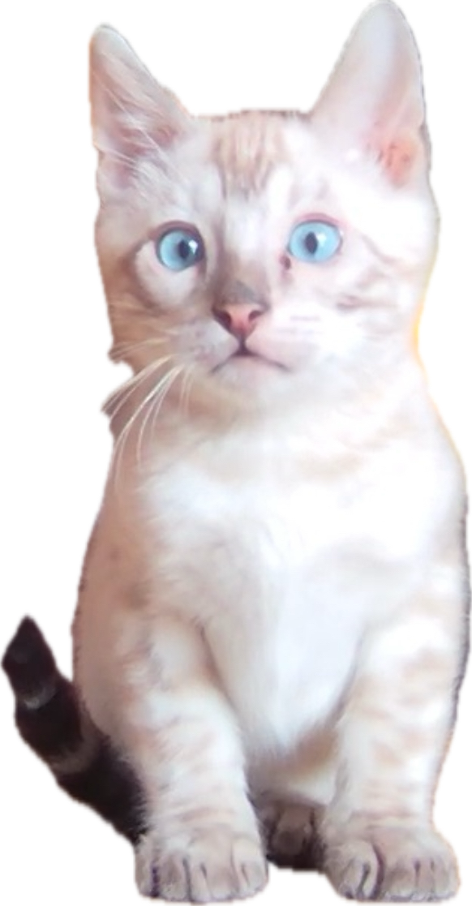

About Me
I am passionate about advancing pet technology.
About Lbenga University
At Lbenga University, we believe the future belongs to those who innovate — not just for people, but for their pets. Founded with a vision to bridge the gap between animal care and cutting-edge technology, Lbenga is the worlds first fictional university dedicated entirely to advancing pet-focused innovation.
From smart collars and behavioral AI to prosthetic development and immersive enrichment systems, our programs empower students to reimagine what is possible for companion animals. Our interdisciplinary curriculum blends animal science, engineering, digital media, and ethics to train the next generation of pet tech pioneers.
Whether you're designing a next-gen fitness tracker for felines or creating a VR experience for enrichment in shelter environments, Lbenga gives you the tools and support to make a difference in the lives of pets and their humans.
Join us at Lbenga! Where compassion meets innovation, and every tail wag is powered by science.
